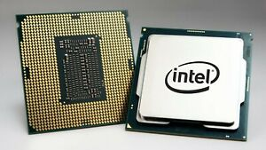
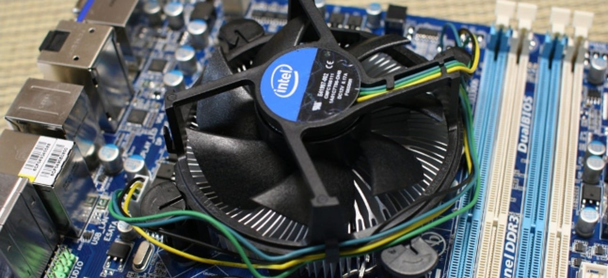

CPU
The CPU, or the central processing unit, is essentially the brains of the computer. It is a small computer that processes data. It is made up of billions of resistors that use binary (computer langauge) to compute and run programs. It processes all the information "flowing" through the PC. It attaches to the motherboard, which is another part we will talk about later.
Due to how much data the CPU processes, it heats up very quickly. To prevent overheating of the CPU, you have to attach a cooling. This typically is just small fan that is put on top of the CPU, so that while the computer is running, that fan will help cool down the CPU.
The CPU and its cooling unit are both very important parts of the PC. Next we will learn about RAM. Click the next button!